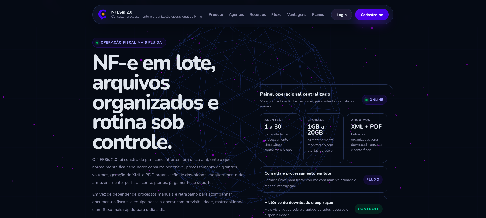
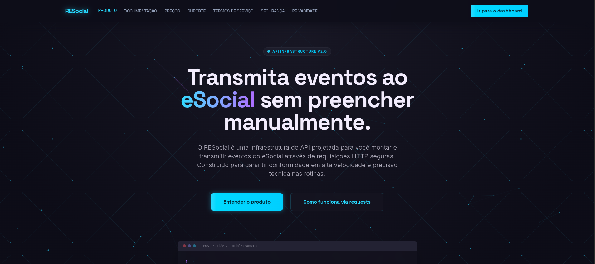
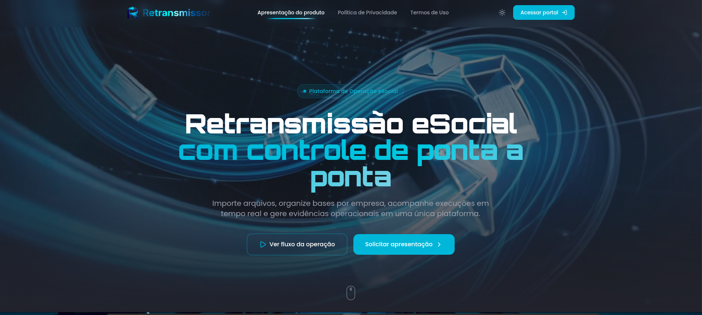

Foco operacional
Sistemas preparados para rotina contínua, rastreabilidade e uso profissional.
Engineering excellence
Tecnologia com peso operacional e acabamento premium. Desenvolvo plataformas B2B, integrações e automações para negócios que precisam de controle, velocidade e segurança.
Sobre mim
Sou desenvolvedor full-stack, responsável e extremamente compromissado com o que faço. Gosto de aprender constantemente e de trabalhar em projetos que desafiam minha criatividade e minhas habilidades técnicas.
Minha abordagem combina código eficiente com experiência de usuário de alto nível, removendo atrito operacional por meio de arquitetura robusta, interface clara e atenção real ao uso diário.
Sistemas preparados para rotina contínua, rastreabilidade e uso profissional.
Estrutura pensada para evolução, manutenção e escala com menos fricção.
Serviços especializados
Sites e aplicações modernas, responsivas, otimizadas para SEO e desenhadas para uma experiência de uso clara.
Aplicações web completas, do backend ao frontend, com foco em desempenho, segurança e operação confiável.
Conexão entre sistemas, ERPs, APIs e rotinas legadas por meio de interfaces seguras e bem estruturadas.
Análise e otimização de projetos existentes para melhorar performance, usabilidade e confiabilidade técnica.
Montagem de computadores, formatação, instalação e troca de peças, remoção de vírus, recuperação de dados e revisão técnica completa.

Engineering portfolio
Soluções reais para problemas operacionais de larga escala.

Consulta automatizada de NF-e, processamento em lote, integração SERPRO, downloads XML/PDF/ZIP, histórico, relatórios, planos, cobrança e suporte.
Visitar projeto
Integração eSocial por API com certificados digitais, assinatura XML, transmissão oficial, consulta de protocolos, logs, recibos e dashboard operacional.
Visitar projeto
Operação eSocial com importação XML/ZIP/RAR, certificados, procurações, empregadores, retransmissão, status, logs e evidências auditáveis.
Visitar projetoUm projeto autoral de RPG para navegador, com criação de artes, história, mecânica de combate e desenvolvimento em JavaScript, HTML/CSS e game design.
Tech stack
Fluxo de entrega
Mapeamento de gargalos e identificação de necessidades operacionais reais.
Desenho da solução escalável e definição da stack tecnológica ideal.
Desenvolvimento com testes, acabamento de interface e atenção à operação diária.
Deploy monitorado e evolução contínua baseada em uso real e feedback técnico.
Contato
Estou disponível para novos projetos e desafios. Entre em contato para discutirmos como posso ajudar a estruturar uma solução sob medida.
davi_watzeck@hotmail.com